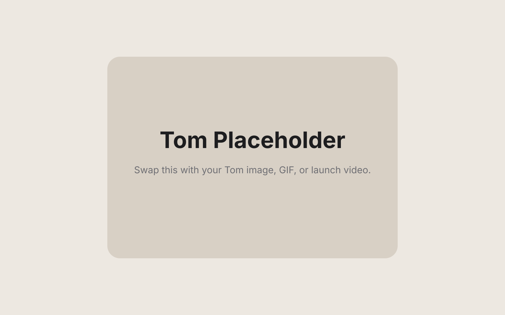

Precision Press System
A deeply integrated, zero-distraction architecture designed to deliver class-leading button engagement at the exact moment Tom decides it is time.
Introducing Tom
With remarkable speed, precision, and no known strategic objective.
Tom has pressed the button
8,492,221

Features
A deeply integrated, zero-distraction architecture designed to deliver class-leading button engagement at the exact moment Tom decides it is time.
Every layer of the experience is calibrated around reptilian intent. Not trends. Not noise. Just pure, focused, premium lizard throughput.
Instant visual, tactile, and emotional feedback. Incredibly advanced. Incredibly unnecessary.
Lizard Audio
Tom Audio Engine synchronizes each press with a signature acoustic event tuned for clarity, confidence, and immediate reptile recognition.
Calibrated playback. Low-latency output. Maximum lizard.
Ask Tom
Tom Intelligence Response
Awaiting your question.